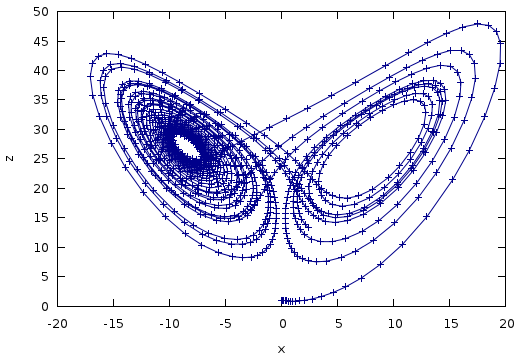

Odeint is a modern C++ library for numerically solving Ordinary Differential Equations. It is developed in a generic way using Template Metaprogramming which leads to extraordinary high flexibility at top performance.
The development was supported by the boost community as a project of the Google Summer of Code 2011
#include <iostream>
#include <boost/array.hpp>
#include <boost/numeric/odeint.hpp>
using namespace std;
using namespace boost::numeric::odeint;
const double sigma = 10.0;
const double R = 28.0;
const double b = 8.0 / 3.0;
typedef boost::array< double , 3 > state_type;
void lorenz( const state_type &x , state_type &dxdt , double t )
{
dxdt[0] = sigma * ( x[1] - x[0] );
dxdt[1] = R * x[0] - x[1] - x[0] * x[2];
dxdt[2] = -b * x[2] + x[0] * x[1];
}
void write_lorenz( const state_type &x , const double t )
{
cout << t << '\t' << x[0] << '\t' << x[1] << '\t' << x[2] << endl;
}
int main(int argc, char **argv)
{
state_type x = { 10.0 , 1.0 , 1.0 }; // initial conditions
integrate( lorenz , x , 0.0 , 25.0 , 0.1 , write_lorenz );
}

Browse the full documentation.
Get some introduction by looking at the slides of our odeint talk
get the source code on GitHub : headmyshoulder/odeint-v2